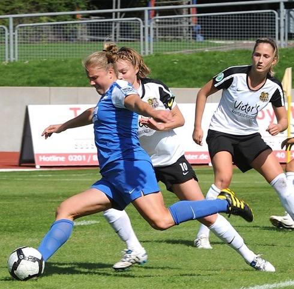

Shannon DeNinno
Shannon DeNinno became the fifth Head Coach of the Aurora University women's soccer program in January of 2018. She comes to AU after six seasons as an assistant coach at Carnegie Mellon University. In her six seasons as an assistant at CMU, the Tartans amassed an 82-19-12 overall record with six NCAA Tournament appearances and advanced to three Sweet 16’s and one Elite 8. She helped guide CMU to two UAA conference championships, including the program's first. Prior to her time at Carnegie Mellon, she spent the 2010 season as an assistant coach at the University of Montevallo and a season as the women’s assistant at Lenoir-Rhyne University, where she helped guide the Bears to a #8 national ranking and a 19-2-2 overall record. That same year, Lenoir-Rhyne won the South Atlantic Championship, as DeNinno helped coach two All-Americans, the conference player of the year and freshman of the year. DeNinno is a 2009 graduate of the University of Tampa with a Bachelor of Arts degree in communications and a minor in graphic design. She earned her master’s degree from Lenoir-Rhyne University in May of 2011 in business administration. As a player, DeNinno spent three seasons at the University of Tampa, where she won a Division II National Championship in 2007. At Tampa, she was part of a team that compiled a record of 52-7-6 in three seasons and appeared in 41 games. She finished her collegiate eligibility at Lenoir-Rhyne, where she was the team’s third-leading scorer with six goals and seven assists. She went on to be a four-year member of the IMG W-League semi-pro team from 2004-07 and spent one season with the WPSL Clearwater Galactics semi-pro team in 2009 and served as team captain. DeNinno also served as the Olympic Development Program Girls ’95 assistant coach in North Carolina. Her team advanced to the 2011 Final Four in Arizona. She completed the National Soccer Coaches Association of America (NSCAA) Advanced National Diploma during the summer of 2017 after receiving the NSCAA National Diploma for completing the course in San Francisco, California, in 2014. She also holds a NSCAA Advanced Regional Diploma (2009) and participated in the NCAA Women's Coaches Academy in 2013.
Michele Fumagalli
Meet Michele Fumagalli, Notre Dame and professional soccer player turned Dietitian, mom and fitness enthusiast. After working in Gatorade Sports Marketing Michele went back to school to pursue a career in dietetics. Her unique background offers Families and athletes a unique, realistic and goal-oriented approach to Nutrition counseling. As a Registered Dietitian, Michele is a food and nutrition expert focusing in Sports and Family Nutrition. She aims to enhance athlete’s performance through nutrition while also being a voice of reason, encouragement, and guidance in the crazy chaotic world of food.
